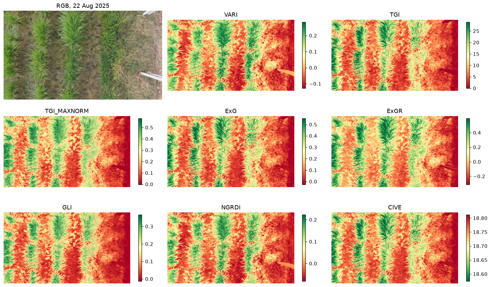
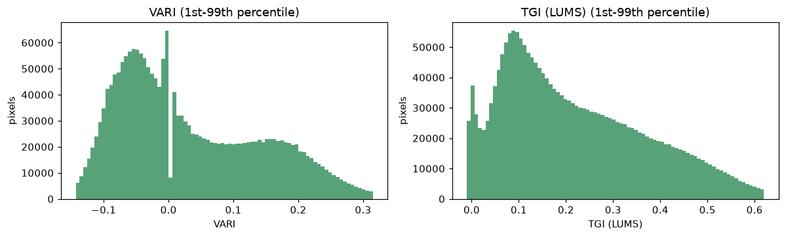
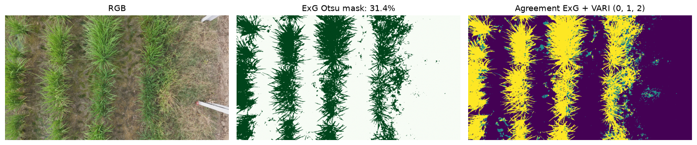
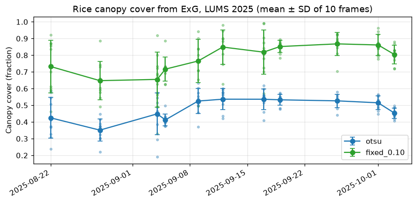
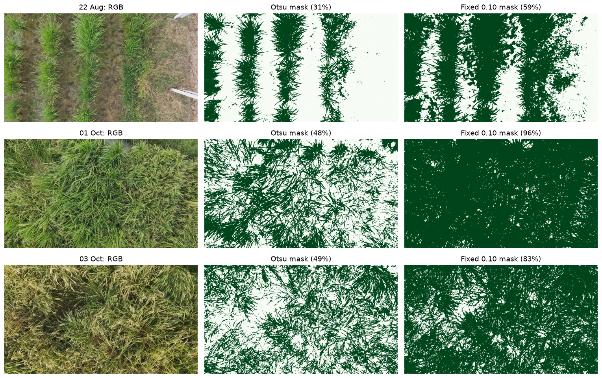
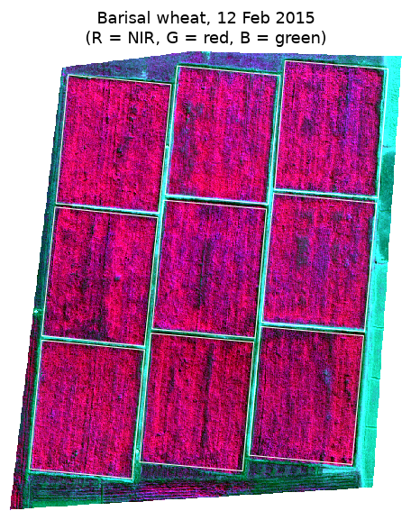
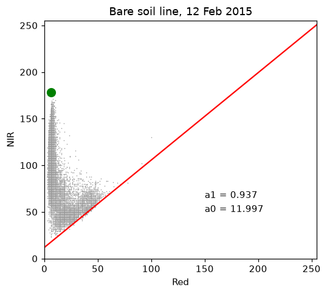
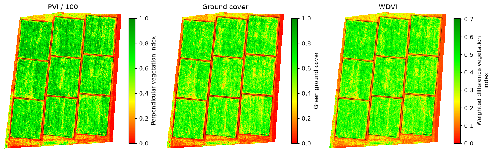
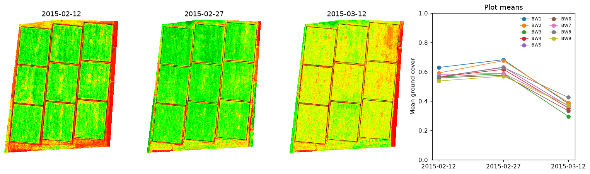

Code
%matplotlib inlineA consumer drone has no near-infrared band, but its red, green and blue channels still separate plants from soil and water. When the camera also records near-infrared, the same idea becomes a ground-cover fraction read from the bare-soil line.
Visible-band indices such as VARI, TGI and Excess Green (ExG) are the workhorses of low-cost phenotyping. This notebook computes them with rs.uav.vegetation_indices, reproduces the LUMS make_tgi_vari.py script, turns an index into a vegetation mask and canopy cover with rs.uav.canopy_cover, and builds a first growth curve: rice canopy cover over all 11 public LUMS dates. The last section changes sensor. A five-band wheat mosaic from Barisal, Bangladesh, has red and near-infrared, so ground cover is the perpendicular vegetation index divided by its value at full canopy (Maas and Rajan, 2008), from rs.uav.bare_soil_line and rs.uav.cover_layers.
| Data | Type |
|---|---|
LUMS rice frames, 11 dates from 22 Aug to 3 Oct 2025, 10 frames each (Data/08_remote_sensing/08_04_uav/infrastructure-free-uav-phenotyping) |
Real (CC BY 4.0) |
Barisal wheat, five-band UAV GeoTIFF on 12 Feb, 27 Feb and 12 Mar 2015, plus nine plot polygons (Data/08_remote_sensing/08_04_uav/UAV_BD) |
Real (STARS project) |
make_tgi_vari.pyInstallation. This notebook needs installation option 5 (core, spatial analysis, spatial statistics, geostatistics and remote sensing): pip install "geolattice[remote-sensing]". See “Installation options” in the GeoLattice README.
import warnings # control warning messages
warnings.filterwarnings("ignore") # hide library warnings
from pathlib import Path # file paths
import numpy as np # arrays
import pandas as pd # tables
import matplotlib.pyplot as plt # figures
import geolattice.rsense as rs # GeoLattice remote sensing (rs.uav = drone tools)
plt.rcParams.update({"figure.dpi": 110}) # figure resolution
DATA = Path("../../../../Data/08_remote_sensing/08_04_uav")
LUMS = DATA / "infrastructure-free-uav-phenotyping"
OUT = Path("outputs"); OUT.mkdir(exist_ok=True)With R, G, B scaled to 0-1:
| Index | Formula | Notes |
|---|---|---|
| VARI | \((G-R)/(G+R-B)\) | Visible Atmospherically Resistant Index; ratio, so insensitive to brightness |
| TGI | \(-0.5\,[190(R-G) - 120(R-B)]\) | Triangular Greenness Index; tracks chlorophyll |
| TGI (LUMS) | \((G - 0.39R - 0.61B)/\max(R,G,B)\) | Max-normalised variant used in make_tgi_vari.py (TGI_MAXNORM) |
| ExG | \(2G - R - B\) | Excess Green; simple, strong plant/soil contrast |
| ExGR | \(ExG - (1.4R - G)\) | ExG minus Excess Red; zero is a natural threshold |
| GLI | \((2G-R-B)/(2G+R+B)\) | Green Leaf Index |
| NGRDI | \((G-R)/(G+R)\) | Normalised green-red difference |
| CIVE | \(0.441R - 0.811G + 0.385B + 18.787\) | Colour Index of Vegetation Extraction; lower = greener |
<xarray.Dataset> Size: 66MB
Dimensions: (y: 1080, x: 1920)
Coordinates:
* y (y) float64 9kB -0.5 -1.5 -2.5 ... -1.078e+03 -1.08e+03
* x (x) float64 15kB 0.5 1.5 2.5 ... 1.918e+03 1.918e+03 1.92e+03
Data variables:
VARI (y, x) float32 8MB 0.1111 0.129 0.121 ... -0.08811 -0.08811
TGI (y, x) float32 8MB 13.92 13.96 13.59 ... 1.255 1.255 1.255
TGI_MAXNORM (y, x) float32 8MB 0.4109 0.4082 0.3971 ... 0.01224 0.01224
ExG (y, x) float32 8MB 0.2549 0.2588 0.251 ... -0.01176 -0.01176
ExGR (y, x) float32 8MB 0.2216 0.2345 0.2216 ... -0.3373 -0.3373
GLI (y, x) float32 8MB 0.2234 0.2245 0.2162 ... -0.003932 -0.003932
NGRDI (y, x) float32 8MB 0.08537 0.09756 0.09091 ... -0.05 -0.05
CIVE (y, x) float32 8MB 18.69 18.69 18.69 ... 18.81 18.81 18.81
Attributes:
source: ../../../../Data/08_remote_sensing/08_04_uav/infrastructure-fr...
gsd_m: None
units_xy: pxarray([-5.0000e-01, -1.5000e+00, -2.5000e+00, ..., -1.0775e+03, -1.0785e+03,
-1.0795e+03], shape=(1080,))array([5.0000e-01, 1.5000e+00, 2.5000e+00, ..., 1.9175e+03, 1.9185e+03,
1.9195e+03], shape=(1920,))array([[ 0.1111111 , 0.12903224, 0.12096772, ..., -0.13836482,
-0.1301775 , -0.13496935],
[ 0.1190476 , 0.12903224, 0.13934425, ..., -0.12021857,
-0.11458332, -0.11340205],
[ 0.10937499, 0.13709676, 0.15573768, ..., -0.10426539,
-0.10185184, -0.10280373],
...,
[ 0.02173913, 0.03448275, 0.03921568, ..., -0.08810572,
-0.08849557, -0.08849557],
[ 0.01986755, 0.03311258, 0.03921568, ..., -0.08849557,
-0.08849557, -0.08849557],
[ 0.01851851, 0.02580645, 0.03821656, ..., -0.08771929,
-0.08810572, -0.08810572]], shape=(1080, 1920), dtype=float32)array([[13.921569 , 13.960784 , 13.588235 , ..., 0.27450848,
0.27451134, 0.27450848],
[14.058824 , 13.960784 , 13.862745 , ..., 0.27450943,
0.27450943, 0.27450943],
[13.921569 , 14.333333 , 14.607843 , ..., 0.27450943,
0.27450943, 0.27450943],
...,
[ 6.294117 , 8.215686 , 9.529411 , ..., 1.2549019 ,
1.2549019 , 1.2549019 ],
[ 7. , 8.921568 , 9.764706 , ..., 1.2549019 ,
1.2549019 , 1.2549019 ],
[ 7.2352953 , 9.019608 , 9.764706 , ..., 1.2549019 ,
1.2549019 , 1.2549019 ]], shape=(1080, 1920), dtype=float32)array([[ 4.1089883e-01, 4.0822223e-01, 3.9711112e-01, ...,
-2.7589139e-04, -2.5804291e-04, -2.6848490e-04],
[ 4.1066667e-01, 4.0822223e-01, 4.0577775e-01, ...,
-2.3671155e-04, -2.2474299e-04, -2.2224584e-04],
[ 4.0186810e-01, 4.1933334e-01, 4.2799997e-01, ...,
-2.0306728e-04, -1.9800324e-04, -1.9998326e-04],
...,
[ 1.4155173e-01, 1.8194914e-01, 2.0418030e-01, ...,
1.2238094e-02, 1.2296649e-02, 1.2296649e-02],
[ 1.4484122e-01, 1.9256195e-01, 2.1090904e-01, ...,
1.2296649e-02, 1.2296649e-02, 1.2296649e-02],
[ 1.3867651e-01, 1.9121945e-01, 2.0415995e-01, ...,
1.2180093e-02, 1.2238094e-02, 1.2238094e-02]],
shape=(1080, 1920), dtype=float32)array([[ 0.25490195, 0.2588235 , 0.25098038, ..., -0.03137258,
-0.03137252, -0.03137258],
[ 0.2588235 , 0.2588235 , 0.2588235 , ..., -0.03137255,
-0.03137255, -0.03137255],
[ 0.25490195, 0.26666665, 0.2745098 , ..., -0.03137255,
-0.03137255, -0.03137255],
...,
[ 0.10980392, 0.14509803, 0.16862741, ..., -0.01176471,
-0.01176471, -0.01176471],
[ 0.12156865, 0.15686274, 0.17254901, ..., -0.01176471,
-0.01176471, -0.01176471],
[ 0.12549022, 0.15686274, 0.17254904, ..., -0.01176471,
-0.01176471, -0.01176471]], shape=(1080, 1920), dtype=float32)array([[ 0.22156861, 0.2345098 , 0.22156861, ..., -0.2882353 ,
-0.29999992, -0.2929412 ],
[ 0.22941175, 0.2345098 , 0.23960784, ..., -0.31647056,
-0.3270588 , -0.32941175],
[ 0.21921569, 0.24745098, 0.26549017, ..., -0.34941173,
-0.35529405, -0.3529411 ],
...,
[-0.01137254, 0.03176472, 0.05568624, ..., -0.33725488,
-0.33607835, -0.33607835],
[-0.01137251, 0.03999999, 0.06078431, ..., -0.33607835,
-0.33607835, -0.33607835],
[-0.01921567, 0.03254905, 0.05607849, ..., -0.3384313 ,
-0.33725488, -0.33725488]], shape=(1080, 1920), dtype=float32)array([[ 0.22336769, 0.22448978, 0.21621619, ..., -0.01600001,
-0.0148148 , -0.01550389],
[ 0.22448978, 0.22448978, 0.22448978, ..., -0.01342282,
-0.01265823, -0.0125 ],
[ 0.2173913 , 0.23287669, 0.24137929, ..., -0.01129943,
-0.01098901, -0.01111111],
...,
[ 0.06422018, 0.08505747, 0.09662919, ..., -0.00393185,
-0.00395257, -0.00395257],
[ 0.06553913, 0.09009008, 0.09999999, ..., -0.00395257,
-0.00395257, -0.00395257],
[ 0.06250001, 0.08849557, 0.09649124, ..., -0.00391134,
-0.00393185, -0.00393185]], shape=(1080, 1920), dtype=float32)array([[ 0.08536585, 0.09756096, 0.09090909, ..., -0.08208957,
-0.07638888, -0.07971016],
[ 0.09090909, 0.09756096, 0.10429447, ..., -0.06962024,
-0.06586826, -0.06508875],
[ 0.08333333, 0.10429447, 0.11801241, ..., -0.05913978,
-0.05759162, -0.05820105],
...,
[ 0.01310044, 0.02164502, 0.02521008, ..., -0.05 ,
-0.05025125, -0.05025125],
[ 0.01204819, 0.02109705, 0.02542373, ..., -0.05025125,
-0.05025125, -0.05025125],
[ 0.01115241, 0.01652892, 0.02459016, ..., -0.04975124,
-0.05 , -0.05 ]], shape=(1080, 1920), dtype=float32)array([[18.691475, 18.689585, 18.692823, ..., 18.811596, 18.812183,
18.81183 ],
[18.689804, 18.689585, 18.689365, ..., 18.813007, 18.813538,
18.813654],
[18.691591, 18.686344, 18.682886, ..., 18.814655, 18.814949,
18.81483 ],
...,
[18.75134 , 18.73743 , 18.728388, ..., 18.807549, 18.80749 ,
18.80749 ],
[18.7474 , 18.733078, 18.72682 , ..., 18.80749 , 18.80749 ,
18.80749 ],
[18.746479, 18.733416, 18.727055, ..., 18.807608, 18.807549,
18.807549]], shape=(1080, 1920), dtype=float32)fig, axes = plt.subplots(3, 3, figsize=(14, 8.5))
axes[0, 0].imshow(rs.uav.to_rgb_array(img)); axes[0, 0].set_title("RGB, 22 Aug 2025")
for ax, name in zip(axes.flat[1:], vi.data_vars):
v = vi[name].values
lo, hi = np.nanpercentile(v, [2, 98])
im = ax.imshow(v, cmap="RdYlGn_r" if name == "CIVE" else "RdYlGn", vmin=lo, vmax=hi)
ax.set_title(name); plt.colorbar(im, ax=ax, shrink=0.7)
for ax in axes.flat: ax.axis("off")
plt.tight_layout(); plt.show()
make_tgi_vari.pyThe LUMS script (in code/vegetation_indices/) reads an orthomosaic PNG, computes VARI and the max-normalised TGI in column chunks, and replaces zero denominators with 1e-6. The same arithmetic in plain NumPy:
rgb = rs.uav.to_rgb_array(img).astype(np.float32) # (rows, cols, 3), 0-1
R, G, B = rgb[..., 0], rgb[..., 1], rgb[..., 2]
den = G + R - B; den[den == 0] = 1e-6
vari_lums = (G - R) / den
mx = np.maximum(np.maximum(R, G), B); mx[mx == 0] = 1e-6
tgi_lums = (G - 0.39 * R - 0.61 * B) / mx
cmp = pd.DataFrame({
"index": ["VARI", "TGI_MAXNORM"],
"max_abs_diff": [np.nanmax(np.abs(vari_lums - vi.VARI.values)), np.nanmax(np.abs(tgi_lums - vi.TGI_MAXNORM.values))],
"pct_pixels_differing_>1e-4": [100 * np.mean(np.abs(vari_lums - vi.VARI.values) > 1e-4),
100 * np.mean(np.abs(tgi_lums - vi.TGI_MAXNORM.values) > 1e-4)],
})
cmp| index | max_abs_diff | pct_pixels_differing_>1e-4 | |
|---|---|---|---|
| 0 | VARI | 0.0 | 0.0 |
| 1 | TGI_MAXNORM | 0.0 | 0.0 |
The two agree exactly on this frame. They can differ only where the VARI denominator \(G + R - B\) is exactly zero: the script substitutes 1e-6 there (giving huge values). VARI is unstable wherever blue is high relative to red and green (glare on water, white objects), so its histogram has long tails; the script clips nothing, and the histograms below clip to the 1st-99th percentile for display.
fig, axes = plt.subplots(1, 2, figsize=(11, 3.4))
for ax, (name, v) in zip(axes, [("VARI", vi.VARI.values), ("TGI (LUMS)", vi.TGI_MAXNORM.values)]):
v = v[np.isfinite(v)]
lo, hi = np.percentile(v, [1, 99])
ax.hist(v[(v > lo) & (v < hi)], bins=80, color="seagreen", alpha=0.8)
ax.set(title=f"{name} (1st-99th percentile)", xlabel=name, ylabel="pixels")
plt.tight_layout(); plt.show()
Clouds passing over during a flight change brightness between frames. Ratio indices (VARI, NGRDI, GLI, TGI_MAXNORM) cancel a uniform scaling; difference indices (ExG, ExGR, TGI) scale with it. normalize=True first converts to chromatic coordinates \(r = R/(R+G+B)\) etc., which makes ExG brightness-invariant too.
rows = []
for factor in [0.6, 0.8, 1.0, 1.2]:
dim = (img * factor).clip(0, 1)
raw = rs.uav.vegetation_indices(dim, ["ExG", "VARI", "TGI"])
nrm = rs.uav.vegetation_indices(dim, ["ExG"], normalize=True)
rows.append({"brightness x": factor, "ExG mean": float(raw.ExG.mean()), "ExG (chromatic) mean": float(nrm.ExG.mean()),
"VARI p90": float(raw.VARI.quantile(0.9)), "TGI mean": float(raw.TGI.mean())})
pd.DataFrame(rows).round(4)| brightness x | ExG mean | ExG (chromatic) mean | VARI p90 | TGI mean | |
|---|---|---|---|---|---|
| 0 | 0.6 | 0.1068 | 0.1637 | 0.2021 | 6.0812 |
| 1 | 0.8 | 0.1424 | 0.1637 | 0.2021 | 8.1083 |
| 2 | 1.0 | 0.1780 | 0.1637 | 0.2021 | 10.1353 |
| 3 | 1.2 | 0.2137 | 0.1637 | 0.2021 | 12.1698 |
rs.uav.canopy_cover(index) thresholds an index (Otsu’s method by default, which picks the cut that best separates two modes of the histogram) and returns the mask and the cover fraction. Different indices give slightly different answers; CIVE is inverted (lower is greener), so it is negated first.
cover_rows, masks = [], {}
for name in ["ExG", "ExGR", "VARI", "GLI", "NGRDI", "CIVE"]:
v = -vi[name] if name == "CIVE" else vi[name]
if name == "VARI":
v = v.clip(-1, 1) # tame the unstable tails before Otsu
mask, cover = rs.uav.canopy_cover(v)
masks[name] = mask
cover_rows.append({"index": name, "canopy_cover": cover})
covers = pd.DataFrame(cover_rows).set_index("index")
display(covers.round(3).T)
fig, axes = plt.subplots(1, 3, figsize=(14, 3.6))
axes[0].imshow(rs.uav.to_rgb_array(img)); axes[0].set_title("RGB")
axes[1].imshow(masks["ExG"], cmap="Greens"); axes[1].set_title(f"ExG Otsu mask: {covers.loc['ExG', 'canopy_cover']:.1%}")
agree = masks["ExG"].values.astype(int) + masks["VARI"].values.astype(int)
axes[2].imshow(agree, cmap="viridis"); axes[2].set_title("Agreement ExG + VARI (0, 1, 2)")
for a in axes: a.axis("off")
plt.tight_layout(); plt.show()| index | ExG | ExGR | VARI | GLI | NGRDI | CIVE |
|---|---|---|---|---|---|---|
| canopy_cover | 0.314 | 0.34 | 0.357 | 0.31 | 0.326 | 0.316 |

The cell below computes ExG canopy cover for all 110 public frames. rs.uav.trait_table applies a function to each catalogue row; frames are read at max_dim=1280 for speed (cover is a fraction, so it barely changes with resolution).
cat = rs.uav.build_catalog(LUMS.parent)
cat = cat[cat.dataset.str.startswith("infra")].assign(crop="rice")
def cover_traits(image):
"""ExG canopy cover with Otsu and with a fixed threshold."""
exg = rs.uav.vegetation_indices(image, "ExG")
_, otsu = rs.uav.canopy_cover(exg)
_, fixed = rs.uav.canopy_cover(exg, threshold=0.10, method="fixed")
return {"cover_otsu": otsu, "cover_fixed_0.10": fixed}
traits = rs.uav.trait_table(cat, cover_traits, max_dim=1280)
per_date = rs.uav.summarize_dates(traits, ["cover_otsu", "cover_fixed_0.10"])
per_date.round(3)| crop | date | cover_otsu_mean | cover_otsu_std | cover_otsu_count | cover_fixed_0.10_mean | cover_fixed_0.10_std | cover_fixed_0.10_count | |
|---|---|---|---|---|---|---|---|---|
| 0 | rice | 2025-08-22 | 0.425 | 0.122 | 10 | 0.732 | 0.158 | 10 |
| 1 | rice | 2025-08-28 | 0.351 | 0.066 | 10 | 0.648 | 0.114 | 10 |
| 2 | rice | 2025-09-04 | 0.449 | 0.126 | 10 | 0.655 | 0.165 | 10 |
| 3 | rice | 2025-09-05 | 0.413 | 0.035 | 10 | 0.717 | 0.072 | 10 |
| 4 | rice | 2025-09-09 | 0.525 | 0.075 | 10 | 0.765 | 0.131 | 10 |
| 5 | rice | 2025-09-12 | 0.537 | 0.063 | 10 | 0.849 | 0.103 | 10 |
| 6 | rice | 2025-09-17 | 0.536 | 0.062 | 10 | 0.818 | 0.131 | 10 |
| 7 | rice | 2025-09-19 | 0.533 | 0.033 | 10 | 0.852 | 0.036 | 10 |
| 8 | rice | 2025-09-26 | 0.527 | 0.040 | 10 | 0.868 | 0.069 | 10 |
| 9 | rice | 2025-10-01 | 0.515 | 0.041 | 10 | 0.861 | 0.064 | 10 |
| 10 | rice | 2025-10-03 | 0.453 | 0.030 | 10 | 0.804 | 0.055 | 10 |
fig, ax = plt.subplots(figsize=(9, 4))
for col, c in [("cover_otsu", "C0"), ("cover_fixed_0.10", "C2")]:
ax.errorbar(per_date.date, per_date[f"{col}_mean"], yerr=per_date[f"{col}_std"], fmt="o-", color=c,
capsize=3, label=col.replace("cover_", ""))
ax.scatter(traits.date, traits[col], color=c, s=8, alpha=0.35)
ax.set(ylabel="Canopy cover (fraction)", title="Rice canopy cover from ExG, LUMS 2025 (mean ± SD of 10 frames)")
ax.legend(); ax.grid(alpha=0.3); fig.autofmt_xdate(); plt.show()
The two curves disagree by 30 to 45 percentage points, and the frames below show why neither is right all season:
In practice, pick the threshold per growth stage, calibrate it once on frames with soil visible and freeze it, or replace thresholding with a trained classifier (notebook 09_04_08).
late = pd.concat([traits[traits.date == traits.date.min()].head(1),
traits.sort_values("date").groupby("date").head(1).tail(2)])
fig, axes = plt.subplots(3, 3, figsize=(14, 9))
for row, (_, r) in zip(axes, late.iterrows()):
im = rs.uav.read_frame(r.path, max_dim=1280)
exg = rs.uav.vegetation_indices(im, "ExG")
m_otsu, c_otsu = rs.uav.canopy_cover(exg)
m_fix, c_fix = rs.uav.canopy_cover(exg, threshold=0.10, method="fixed")
row[0].imshow(rs.uav.to_rgb_array(im)); row[0].set_title(f"{r.date:%d %b}: RGB")
row[1].imshow(m_otsu, cmap="Greens"); row[1].set_title(f"Otsu mask ({c_otsu:.0%})")
row[2].imshow(m_fix, cmap="Greens"); row[2].set_title(f"Fixed 0.10 mask ({c_fix:.0%})")
for a in row: a.axis("off")
plt.tight_layout(); plt.show()
traits.to_csv(OUT / "rice_canopy_cover_frames.csv", index=False)
The indices above work from red, green and blue. This section uses red and near-infrared on a wheat field at Barisal, Bangladesh, and follows uav-ground-cover.Rmd and uav-ground-cover.py. The soil line is rs.uav.bare_soil_line. PVI, ground cover and WDVI come from rs.uav.cover_layers.
Ground cover (fCover) is the fraction of the ground hidden by green leaves. On a crop it tracks canopy closure, and it is also a clue to erosion and early irrigation: a closed canopy shades the soil and intercepts rain. Maas and Rajan (2008) estimate that fraction from digital numbers. In red-NIR space, bare soil falls on a straight line
\[ \mathrm{NIR} = a_1\,\mathrm{Red} + a_0 \]
Leaves sit off that line, because they reflect NIR and absorb red. The perpendicular vegetation index (PVI) is the distance from the pixel to the line. Ground cover is that distance divided by the distance of a full canopy:
\[ \mathrm{PVI} = \frac{\mathrm{NIR} - a_1\,\mathrm{Red} - a_0}{\sqrt{1+a_1^2}}, \qquad \mathrm{GC} = \frac{\mathrm{PVI}}{\mathrm{PVI_{FC}}} \]
The weighted difference vegetation index uses the same slope without the perpendicular term:
\[ \mathrm{WDVI} = \frac{\mathrm{NIR}}{255} - a_1\frac{\mathrm{Red}}{255} \]
Three mosaics, flown on 12 February, 27 February and 12 March 2015 under the STARS project, are in UAV_BD, with the nine plot polygons in plot_bd_wheat.shp. Each GeoTIFF has five bands and no CRS tag. The plot file is EPSG:32646 and the coordinates match, so the mosaics are read as that CRS. As in the R lesson, band 2 is red, band 3 is green and band 5 is NIR. The values are digital numbers from that camera, so each flight gets its own soil line.
import geopandas as gpd # plot polygons
from matplotlib.colors import LinearSegmentedColormap
BD = DATA / "UAV_BD"
PLOTS = gpd.read_file(BD / "plot_bd_wheat.shp")
DATES = {
"2015-02-12": BD / "multi_bwh_mc_20150212.tif",
"2015-02-27": BD / "multi_bwh_mc_20150227.tif",
"2015-03-12": BD / "multi_bwh_mc_20150312.tif",
}
# Band order from uav-ground-cover.Rmd: 2 = red, 3 = green, 5 = NIR.
BANDS = ["b1", "red", "green", "b4", "nir"]
MAXVAL = 255 # landsat::BSL drops digital numbers at or above this
ULIMIT = 0.99 # top fraction of the NIR/red ratio used to find full canopy
GC_CMAP = LinearSegmentedColormap.from_list(
"gc", ["#FF0000", "#FFFF00", "#00FF00", "#008B00"]
)
def load_stack(path):
"""Read one mosaic and attach the plot CRS (the GeoTIFF has none)."""
da = rs.read(path, band_names=BANDS, masked=True)
return da.rio.write_crs(PLOTS.crs)
def stretch_linear(band, quantiles=(0.02, 0.98)):
"""2-98% stretch, the limits RStoolbox uses for stretch='lin'."""
values = band[np.isfinite(band)]
lo, hi = np.quantile(values, quantiles)
if hi == lo:
hi = lo + 1e-9
return np.clip((band - lo) / (hi - lo), 0, 1)
stack = load_stack(DATES["2015-02-12"])
print(f"{stack.sizes['y']} rows x {stack.sizes['x']} cols, bands: {', '.join(map(str, stack.band.values))}")
print("CRS", stack.rio.crs)
print("plots", ", ".join(PLOTS.sort_values("ID").Name), "at", PLOTS.Site_name.iloc[0])703 rows x 601 cols, bands: b1, red, green, b4, nir
CRS EPSG:32646
plots BW1, BW2, BW3, BW4, BW5, BW6, BW7, BW8, BW9 at BarisalNIR goes in the red channel, red in the green channel and green in the blue channel, each stretched from the 2nd to the 98th percentile. Leaves are bright in NIR and dark in the red band, so the plots come out magenta. Paths and bare edges, where NIR is low, come out cyan. The white lines are the nine wheat plots.
channels = [stretch_linear(stack.sel(band=name).values) for name in ("nir", "red", "green")]
rgb = np.dstack([np.nan_to_num(channel, nan=0.0) for channel in channels])
alpha = np.isfinite(stack.sel(band="nir").values)
rgba = np.dstack([rgb, alpha.astype("float32")])
left, bottom, right, top = stack.rio.bounds()
fig, ax = plt.subplots(figsize=(5, 5.5))
ax.imshow(rgba, extent=(left, right, bottom, top), interpolation="nearest")
PLOTS.boundary.plot(ax=ax, color="white", linewidth=0.7)
ax.set_axis_off()
ax.set_title("Barisal wheat, 12 Feb 2015\n(R = NIR, G = red, B = green)")
plt.tight_layout(); plt.show()
NIR plotted against red forms a triangular cloud. The lower edge is soil: both bands rise together as the soil gets brighter. Vegetation leaves that edge toward high NIR and low red.
rs.uav.bare_soil_line fits the minimum soil line from landsat::BSL. For each integer red value below 255, keep the lowest NIR, then fit a major-axis line (the default in lmodel2, which is what BSL calls). The full-canopy point is taken from the pixels whose NIR/red ratio is above the 99th percentile. Among those, it is the pixel closest to high NIR and low red. The grey cloud in the figure is a sample of pixels; the line is fit on every finite pixel.
red = stack.sel(band="red")
nir = stack.sel(band="nir")
bsl = rs.uav.bare_soil_line(red, nir, maxval=MAXVAL, ulimit=ULIMIT)
print(f"pixels in the fit: {bsl['n_pixels']:,} red levels: {bsl['n_levels']}")
print(f"a0 = {bsl['intercept']:.3f} a1 = {bsl['slope']:.3f} R^2 = {bsl['r_squared']:.3f}")
print(f"full canopy: red = {bsl['top_red']:.0f}, NIR = {bsl['top_nir']:.0f}")
finite = np.isfinite(red.values) & np.isfinite(nir.values)
xs, ys = red.values[finite].ravel(), nir.values[finite].ravel()
rng = np.random.default_rng(0)
take = rng.choice(xs.size, size=min(20000, xs.size), replace=False)
fig, ax = plt.subplots(figsize=(5, 4.5))
ax.scatter(xs[take], ys[take], s=1, c="0.6", linewidths=0, rasterized=True)
line_x = np.array([0.0, MAXVAL])
ax.plot(line_x, bsl["slope"] * line_x + bsl["intercept"], color="red", linewidth=1.5)
ax.scatter([bsl["top_red"]], [bsl["top_nir"]], c="green", s=80, zorder=5)
ax.text(150, 65, f"a1 = {bsl['slope']:.3f}")
ax.text(150, 50, f"a0 = {bsl['intercept']:.3f}")
ax.set_xlim(0, MAXVAL); ax.set_ylim(0, MAXVAL)
ax.set_xlabel("Red"); ax.set_ylabel("NIR")
ax.set_title("Bare soil line, 12 Feb 2015")
plt.tight_layout(); plt.show()pixels in the fit: 363,544 red levels: 92
a0 = 11.997 a1 = 0.937 R^2 = 0.900
full canopy: red = 6, NIR = 178
rs.uav.cover_layers returns PVI, ground cover and WDVI. PVI below 0 lies on the soil side of the line and is set to 0. PVI above 100 is set to 100, as in the R lesson, and the map shows PVI/100. Ground cover is PVI divided by PVI at the full-canopy point, then clipped to 0-1. WDVI is clipped to the same range. The colours are the red-yellow-green ramp from the original figures.
layers = rs.uav.cover_layers(stack, maxval=MAXVAL, ulimit=ULIMIT)
pvi, gc, wdvi = layers.PVI, layers.GC, layers.WDVI
print(f"PVI at full cover = {layers.attrs['pvi_fc']:.2f}")
print(f"GC min {np.nanmin(gc.values):.3f} mean {np.nanmean(gc.values):.3f} max {np.nanmax(gc.values):.3f}")
print(f"WDVI min {np.nanmin(wdvi.values):.3f} max {np.nanmax(wdvi.values):.3f}")
bd_out = OUT / "uav_bd"
bd_out.mkdir(exist_ok=True)
for name, band in (
("pvi", pvi),
("pvi_normalized", (pvi / 100).rename("pvi_normalized")),
("ground_cover", gc.rename("ground_cover")),
("wdvi", wdvi.rename("wdvi")),
):
rs.write(band, bd_out / f"{name}_20150212.tif")
panels = [
((pvi / 100).rename("PVI / 100"), "PVI / 100", None),
(gc, "Ground cover", (0, 1)),
(wdvi, "WDVI", None),
]
fig, axes = plt.subplots(1, 3, figsize=(12, 4.6))
for ax, (band, title, limits) in zip(axes, panels):
limits_kw = {} if limits is None else {"vmin": limits[0], "vmax": limits[1]}
band.plot(ax=ax, cmap=GC_CMAP, add_colorbar=True, cbar_kwargs={"shrink": 0.7}, **limits_kw)
PLOTS.boundary.plot(ax=ax, color="k", linewidth=0.4)
ax.set_title(title)
ax.set_axis_off()
plt.tight_layout(); plt.show()PVI at full cover = 117.06
GC min 0.000 mean 0.480 max 0.854
WDVI min 0.000 max 0.704
Each flight keeps its own soil line, because the digital numbers still carry that day’s brightness. Mean ground cover inside each wheat plot comes from rs.zonal_stats.
rows, gc_maps = [], {}
for date, path in DATES.items():
da = load_stack(path)
layers = rs.uav.cover_layers(da, maxval=MAXVAL, ulimit=ULIMIT)
gc_da = layers.GC
gc_maps[date] = gc_da
zonal = rs.zonal_stats(gc_da, PLOTS, stats=("mean",))
print(
f"{date} a0 = {layers.attrs['intercept']:.3f} a1 = {layers.attrs['slope']:.3f} "
f"PVI_FC = {layers.attrs['pvi_fc']:.2f} image mean GC = {float(np.nanmean(gc_da.values)):.3f}"
)
for rec in zonal.sort_values("ID").itertuples(index=False):
rows.append({"date": date, "plot": rec.Name, "gc": rec.GC_mean})
rs.write(gc_da, bd_out / f"ground_cover_{date.replace('-', '')}.tif")
cover = pd.DataFrame(rows)
wide = cover.pivot(index="plot", columns="date", values="gc")
wide = wide.loc[sorted(wide.index, key=lambda name: int(name[2:]))]
display(wide.round(3))
fig, axes = plt.subplots(
1, 4, figsize=(14, 4.2), gridspec_kw={"width_ratios": [1, 1, 1, 1.25]}
)
for ax, date in zip(axes[:3], DATES):
gc_maps[date].plot(ax=ax, cmap=GC_CMAP, vmin=0, vmax=1, add_colorbar=False)
PLOTS.boundary.plot(ax=ax, color="k", linewidth=0.45)
ax.set_title(date)
ax.set_axis_off()
ax = axes[3]
for name, group in cover.groupby("plot", sort=False):
ax.plot(group["date"], group["gc"], marker="o", linewidth=1, label=name)
ax.set_ylim(0, 1)
ax.set_ylabel("Mean ground cover")
ax.set_title("Plot means")
ax.legend(ncol=2, fontsize=7, frameon=False)
plt.tight_layout(); plt.show()2015-02-12 a0 = 11.997 a1 = 0.937 PVI_FC = 117.06 image mean GC = 0.480
2015-02-27 a0 = 16.483 a1 = 0.846 PVI_FC = 77.34 image mean GC = 0.565
2015-03-12 a0 = 13.204 a1 = 0.954 PVI_FC = 92.02 image mean GC = 0.354| date | 2015-02-12 | 2015-02-27 | 2015-03-12 |
|---|---|---|---|
| plot | |||
| BW1 | 0.630 | 0.683 | 0.383 |
| BW2 | 0.592 | 0.676 | 0.390 |
| BW3 | 0.564 | 0.588 | 0.296 |
| BW4 | 0.564 | 0.617 | 0.353 |
| BW5 | 0.566 | 0.632 | 0.366 |
| BW6 | 0.558 | 0.577 | 0.334 |
| BW7 | 0.581 | 0.590 | 0.369 |
| BW8 | 0.565 | 0.629 | 0.426 |
| BW9 | 0.537 | 0.570 | 0.372 |

On 12 February, PVI at the full-canopy point is about 117. The map clips PVI at 100, so ground cover on that date tops out near 0.85. On 27 February and 12 March the full-canopy point lies below 100, and some pixels reach 1.
The nine plot means sit above the mean of the whole mosaic, which still includes bare ground outside the plots. From 12 February to 27 February every plot rises: the plot means move from about 0.54-0.63 to about 0.57-0.68. On 12 March every plot is lower, about 0.30-0.43. PVI follows green leaves. This late in the wheat season a canopy can lose chlorophyll while the plants are still standing, and those pixels fall back toward the soil line. Read the March drop as less green cover, and check it in the field before treating it as a loss of biomass.
Key points
GeoLattice functions used: rs.uav.vegetation_indices, rs.uav.canopy_cover, rs.uav.read_frame, rs.uav.build_catalog, rs.uav.trait_table, rs.uav.summarize_dates, rs.uav.bare_soil_line, rs.uav.cover_layers, rs.read, rs.write, rs.zonal_stats.
Exercises
normalize=True for ExG in cover_traits. Does the frame-to-frame spread shrink?References